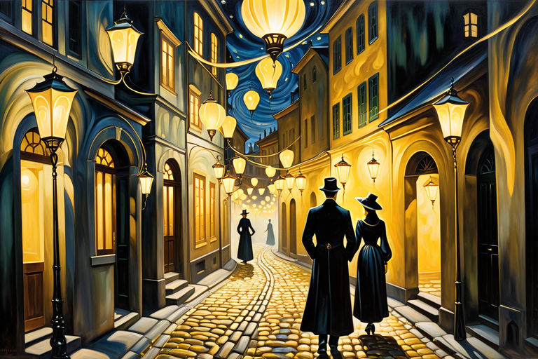
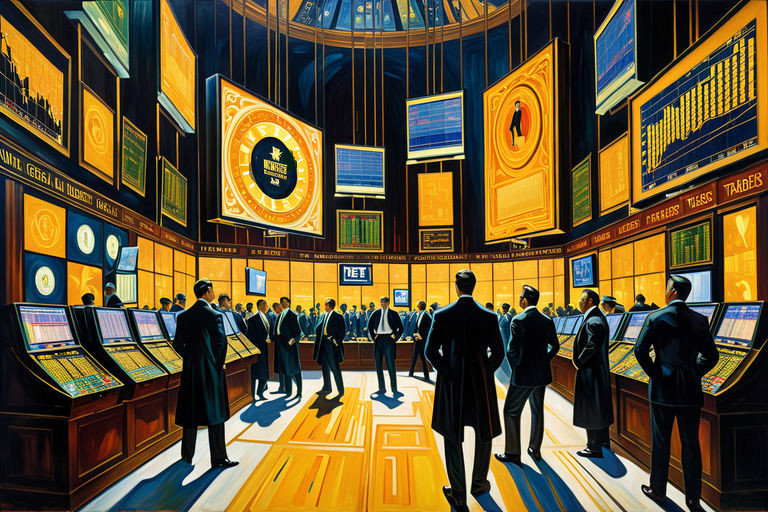
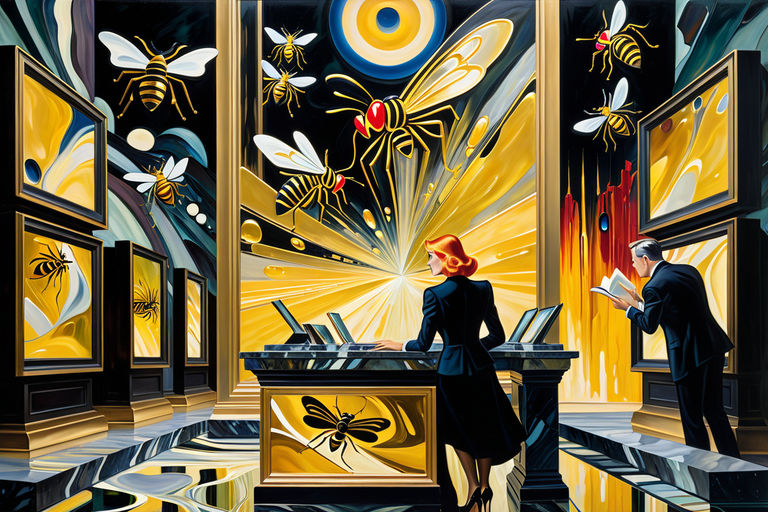
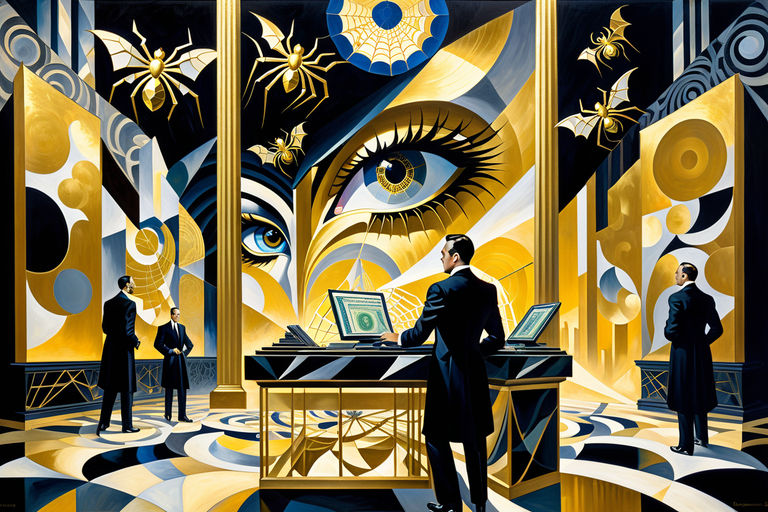
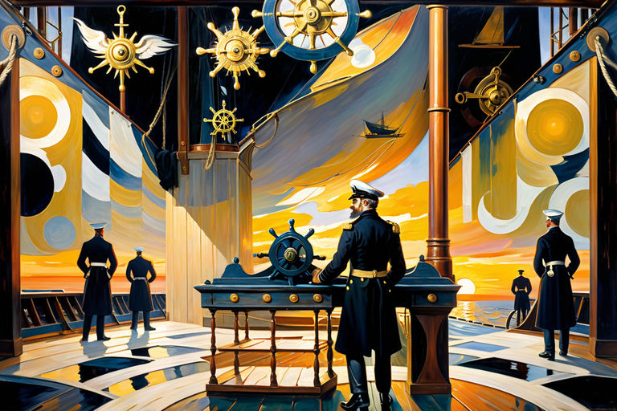

Χρυσῆς καταιγίδος ἀντίλαλοι
Table of Contents
1. Χρυσῆς καταιγίδος ἀντίλαλοι
1.1. Πειρασμοί ἐν τῇ ἀχλύϊ

Ἐν γραφικοῖς, λησμονημένοις γωνίαις σκοτεινοφωτισμένων πόλεων, ψιθυρίζεται μεταξὺ τῶν νυκτερινῶν πλανωμένων - τῶν με κρυφοῖς ῥῦθμοις - ὅτι οἱ φερομόναι ᾄδουν, αἱ φωναὶ αὐτῶν μιᾶς αποπνικτικῆς συμφωνίας ἐναρμονίζονται, ἥ ἐλκύει τοὺς ζητητὰς τῆς σαρκικῆς γνώσεως νὰ ἀκολουθήσουν.
Χρυσοὶ προσελκυστικοὶ εἰσίν οἱ ὀσμές αὗται, βέλη ἐπιθυμίας καὶ ἔρωτος ἀποστέλλουσαι πρὸς τοὺς δεκτὰς. Δεσμοφύλακες συνδετοί φυλάσσουσιν τὸ φρούριον τῆς ἀνθρωπίνης πόθου. Ένας ἐπιτρεπτὸς πειρασμοῦ πέπλος, ἐνῷ αἱ πύλαι εὐρύχωροι κρέμονται πρὸς τὸ ἐλευθερῶσαι ὅσα κεκλεισμένατὸ ζωώδες φύσημα τοῦ ἀνθρώπου, τὸ κρυπτόμενον ὀπίσω προσώπων εὐγένειας καὶ περιορισμοῦ.
Τοιαύτη μοιραία νύξ εν τη ατελεί πόλει Αρβολόφω ετελέσθη. Οδοί, κατακεκαλυμμένοι υπό την πέπλη του σκότους, υποδέχθησαν τα τρυφερά χάδια τοῦ δροσεροῦ αἰθέρος. Καθὼς δὲ αἱ σκιαὶ χόρευαν ἐπὶ τῶν λιθόστρωτων, οἱ λεπτομέρειαι τῆς ἀκαταμάχητης πόθου ἐλίσσοντο ἐν ταῖς στεναγματικαῖς στοὰς φιλοῦσαι τὴν ἀχλύν.
Ὁ ἀήρ, πνέων ῥυθμικὸς καὶ ἐπίμονος - οἱ φερομονικοὶ κύκλοι ἐμπλέκοντο, σχηματίζοντες δόλια δίκτυα μετὰ ταχύτητος γοητείας. Κάλεσμα σειρήνας πρὸς τοὺς ἀπελπισμένους, τοὺς περίεργους καὶ τοὺς κολασμένους. Ἔσχισαν παλαιὰς θύρας καὶ καταπατήματα, αὐτοὺς τοὺς αὐτούς ἐξεύρησαν, ἄνθρωποι πύραυλοι θερμότητα ζητοῦντες, ἐκπέμποντες ἐπὶ τὰς συχνότητας τοῦ πόθου.
Ἀρξάμενος ἐκ τοῦ μόνου βήχα, τρέμουλον, διστακτικὴν εἰσαγωγὴν εἰς τὴν ἡσυχίαν. Ἀνελεήτως, τρέμουλον πλέκοντι ἐν τῷ σκότει μίαν νῆμαν ἀδιέξοδον, συνδέον τὸ ἀπρόσμενον πρὸς τὸ ἐπιμένον. Μετὰ ἑκάστου διστακτικοῦ βήματος, τὸ ἄρωμα πλέκεται σφιχτότερον, τὰ χρυσᾶ νήματα αὐτὸ παγιδεύουν ἕως οἱ πέπλοι σχίσωσιν.
1.2. Ὁ βοῶν τοῦ δημοπράττοντος
 Ἦλθεν ὁ παροξυσμός - πυρετώδης, λυσσαλέα ἐξερεύνησις. Χρυσοῖ θήλακες ἀστράπτουσιν ἐν πηκτῷ θολερῷ σκότει, πεινῶντες, διωγμένοι, καλούμενοι. Ἀστάθμητος συρiστικὴ πορεία, ἀναπνοαὶ ἐπιπεπληγμέναι, νυκτερίδες μαγευόμεναι ὑπὸ τῆς χρυσῆς φλογός. Λιθόστρωτοι δρόμοι ταράχθησαν ὑπὸ τοῦ βρόντου τῶν βημάτων.
Καταπίπτουσα, καταρρέουσα ἡ τιμὴ τοῦ χρυσοῦ πτερνίζει κάτω. Ἐν ναοῖς ἐκ γυαλίου καὶ μέταλλον, πρόσωπα λευκαίνονται, φωναὶ ὑψοῦνται, δάκτυλα τύπτουσιν ἐπὶ τῶν τραπεζῶν. Αἱ σηματοδόται προσωπίζουσιν, ψάλλουσιν τὰς θρῆνοις περὶ τοῦ ἐκτιμημένου νομίσματος. Οἱ ὀθόναι ἀναβλύζουσιν κόκκινον, μέλαν, λευκόν - προειδοποιήσεις περὶ τῆς προφανοῦς καταπτώσεως.
Ἐπὶ τῆς οθόνης, οἱ ἀναγνῶσται τῶν ἐιδήσεων ἐλάλησαν, τοῖς βαφομένοις χείλεσι διαπλάττοντες ῥήματα παρηγορίας. “Μὴ φοβοῦ”, ψευδῆ εἶπαν, “ἀγόρασον ὑποτιμημένα, πούλησον ὑψηλῶς”. Ἀλλ᾽ἐν σκιαῖς πέραν τοῦ φωτὸς τῆς οθόνης, ἡ μέριμνα ἐδάγκασε.
Οἱ ὀσμαὶ ἐπήρθησαν, ἡ δύναμις ἐπλημμύρησε, φίλτρον εὐεξίας. Φερομόναι ἐκράγησαν βαρεῖς, δοσολογία ἀποσταγμένη περιφέρουσα τοὺς πρόθυμους.
Οἱ τιμαὶ ἀναπηδῶσιν εἰς ὕψη, χρυσωμένον ἴσιον. Ἱματικαὶ ἐιδοποιήσεις, προειδοποιήσεις ἐκρήξεων. Οἱ φόβοι τῶν παγιδευμένων ἔμπορων ἀνατρέπονται, ἀνατρίζουν, σπόροι καλαμποκίου σπάζονται, ἐμπετάζουν, ἀναταράσσονται.
Ὑπὸ τοῖς προσεκτικοῖς φακοῖς, κρυπτομένα πρόσωπα ἀνησυχοῦσινὁ παρελθὼν χρόνος. Διαπορευόμενα δάκτυλα, ἔμπορος, ἀνταλλαγή, ἀγορά.
Ὁ δημοπράτης ἀνακράζει, ἡ προσφορὰ ἄρχεται, ἄγρια, ἀτρόμητος. Ὄμματα λαμπρὰ, στόματα ἡμικλειστά, χεῖρες ἐν τῷ ἀέρι κυματίζουσιν, τσακίζουσιν, ἐπικινδυνεύουσιν. Χρυσωμένον, φίλτρῳ μεμιγμένον ἀερίῳ παρασύρεται, καταβαίνει, παραπίπτει.
Ἐπὶ τῶν οθόνης, ἡ τῶν νέων ἀναγνώστρια ψευδεῖς ἔλεγε λόγους“Μηδεμίαν πανικὸν ἀναγκάζεσθε, αἱ κινήσεις τῆς ἀγορᾶς φαινομενικαὶ εἰσίν. Ἡ τιμὴ τῆς φερομόνης ὡς ἀστέρων ἀνατείλαντων, λαμπρῶν, ἐμφράκτων. Οἱ οθόναι θολοειδεῖς κιττοῦσιν κίτρινον, ἐκπέμπουσαι - λάβαν λαμπερὰν πολυτέλειαν. Δάκτυλα ἀνακνιζόμενα, πληκτρολογοῦντα, ὀρχούμενα, δειλοὶ δακτύλοι - ὄντως ἀγωνιώδεις, ἀγωνιώδεις ἐμπόροι.
Ἡ τῶν νέων ἀναγνώστρια ψιθυρίζει, λέγει, βοᾷ, κράζει. Ἡ τιμὴ τῆς φερομόνης ἀστρονομική, τρομερή, ἀνόητος. Ὀθόναι ἀστραπτοβολοῦσι εἰκόνες ἀνατέλλουσαι. Φερομόναι, νέον ἔμπορον, περιουσίαν χρυσήν, καὶ χρυσοῦν μᾶλλον.
1.3. Χρυσοδάκτυλος παράνοια

Ἀγοραῖος παραφροσύνη προχωρεῖ χρυσὴ πύρωσις πάντας κατέχει. Τὰ πρὸς τὸν οὐρανὸν ἀναβαθμοὶ περιστρέφονται ἐν φερομονικῷ συνωστισμῷ. Ἐπὶ τῶν οθόνης, χείλεα ἐμπνεοῦσιν ψευδεῖς λόγους“Μὴ πανικοῦτε!”
Φάρμακεμβρεγμένοι οὐρανοὶ ἀνακλῶνται, ἀντανακλῶντες τὴν ἄτακτον ἀναστάτωσιν. Χρυσοῦνοι ὄθοναι βοῶσιν προειδοποιήσεις. Κρυπτοὶ, ἐπιμασκημένοι ἄνδρες ἀγωνίζονται, παραπονοῦνταιὁ χρόνος διαπίπτει διὰ τῶν χειρῶν. Δάκτυλα ἀγωνιώδη κόπτουσι, κόπτουσι, κόπτουσι, κύλισις, κύλισις, κύλισις.
Δάκτυλα ἐκτυπῶσιν τὸ γυαλῖνον γρανίτην πατῶντα, γράφοντα, διαγράφοντα ματαίας προσπαθείας περιόδου τῆς καταστροφῆς ἢ καρποῦ τῆς ἀνταμοιβῆς. Ἀργυροῦντες χείλεα, κυρταὶ κοράλλινοι, διατυποῦσιν ἡμιθελεῖς ἐλπίδας ἐν μελῳδίᾳ ἡδυγλωσσίας.
Τὰ χείλη τῶν ἀναγνωστῶν διαπορφύρουν, σεστραμμένα εἰς χλωροτριβεῖς γέλωτας. Οἱ ὀφθαλμοὶ ἀνασκιρτῶσι, κινοῦνται, σαλεύουσι, εἰκονίδια σκιαγραφοῦντες τῆς μεριμνῶσας φύσεως. Καπνοὶ γελάσματος, οὐρανοὶ γελοίων, πνιγμοὶ κωμικῶν χαρμοσύνων.
Ἀμεταίρετοι, ἐπὶ τῆς σκηνῆς, τὰ χείλη τῶν ἀναγνωστῶν ἐπιδέρονται ψευδῆ λόγια, “Μὴ πανικοῦτε! Οἱ μετοχαὶ ὑψοῦνται! Ὁ χρυσὸς τῶν πτωμάτων ἀναβαίνει ἐκ νέου!” Ἀλλὰ ἄφωνοι φόβοι, ἀπροσέγγιστα ἀνηλώματα ἐπανέρχονται, ἀόραται ἀράχναι ἐν τοῖς χρυσοῖς συνεπήραγμασμέναι ἱστοῖς.
Λαμπραὶ ἀραχνοειδεῖς φερόμοναι διαρρήξουσι, αἱ κλωσταὶ αὐτῶν παγιδεύουσιν ἀπολωλότα χρυσὰ ἔντομα. Οἱ ἀσταθεῖς ἀποτιμήσεις ἐξανθήσουσιν ὡς κύνοι ἀγρίοι, βυθίζονται βαθέως εἰς τὸν νοῦν τῶν ἀποδότων, ψιθυρίζουσιν κέρδη καὶ ζημίας. Ἡ ποτὲ σταθερὰ ἀγορὰ ὑποχώρησεν εἰς ἀναρχίαν, ὡς αἱ ἀραχνοειδεῖς φερόμοναι ὀρχοῦνται, τὸ δηλητήριόν τους ῥέει, παγιδεύοντες ἐν πᾶσιν τοῖς χρυσοκομίοις δικτύοις τῆς ἀγορᾶς.
Ἄργυρογλώσσοι ἀναγνώσται μελῳδοῦντες, μαγεύοντες τὸ ἐξαίσιον πλῆθος, οἱ ὀφθαλμοὶ αὐτῶν λάμπουσι, ἕκαστον χρυσὸν ἔντομον ἐναγωνιζόμενον εἰς τὸν ἄριστον τόπον ἐν τοῖς ἐν τοῖς περιπλοκοῖς χρυσοδιαπλεκτοῖς ἱστοῖς. Περικλάδες φόβου καὶ πλεονεξίας ἐπιπολῶσιν, τρέμουσιν, φθείρουσιν, καθὼς πλείονες ἐπενδυταὶ φωνάζουσιν νὰ μετέχωσιν.
Ἀπαρατηρήτως, χρυσοὶ κλοιοὶ ἀθόρυβοι ἐκλείσθησαν, δεδεμένοι ἐν τῷ πνιγηρῷ κράτει τῆς φερομονικῆς λοιμοῦ. Ἐν τῷ χρυσῷ ἱστῷ, οἱ ἀραχνοειδεῖς φερομόνες ἀνατρίχιασαν, χορτάσαντες, νικηταὶ ἐν τῇ κακοβουλίᾳ τῆς κυριαρχίας αὐτῶν. Ὑψηλὰ, τὰ χείλη τῶν ἀναγνωστῶν ἐιδήσεων συνέσφιγμένα πιέζονται, χαμόγελον ἀναγκαστικὸν κρύπτει τὰ μυστικώτερα.
1.4. Ἀραχνοειδεῖς καὶ Ἐπιχρυσωμέναι Παγίδαι

Οἱ φερομόναι διατηροῦνται, δυναταί, ἰσχυραί, προκλητικαί. Χρυσδέδετος ἄνεμος σαλεύει χαρμοσύνην καὶ ταραχὴν, στροβίλους πλούτου καὶ λύπης. Ἡ τρέλα τῆς ἀγορᾶς ἀνακωκύζει, ἀνήφορος, ἀταραξίας, σφυροῦσα πρὸς τὴν χρυσοδέδετον δόξαν. Ἀλλὰ ἄφωνα μυστικὰ διατρέχουσιν.
Ἐν τῷ μεταξὺ, ἀθέατα πλῆθη ἐν σκότῳ καταδύονται, λησμονημένοι, ἐρημωμένοι καὶ φοβισμένοι. Δάκτυλα πετοῦνται, μάταιοι ἱκετείαι εἰς κενὸν. Ἀλλὰ φάντασμα δύναμις ἀναγκάζει, ὑποχωρεῖ, ἐμβάλλει αὐτοὺς εἰς τὸ χρυσδέδετον χάσμα, ἀνόητοι, ἀναισθήτοι νήπιοι. Χα! Μὴν εἶναι ἀστεῖον, κραυγή, ἀναταραχή;
Ὁ χρυσὸς, δοκεῖ, μνημονεύει τὰς ῥίζας αὐτοῦ, ἐξορύττει καὶ ῥέει, ὠρύεται ὡς φάσμα, βοῶν ὥσπερ μοιρολόι. Καὶ πάντοθεν, ἀοράτοι ἀράχναι ἱστοὺς ὑφαίνουσι, σιωπηλοὶ ποδῶν, χρυσοκόκκινους διὰ παγίδας ἀρπάζοντες ἀθώους ἀνθρώπους. Ποτε ὄρχησαι μετὰ ἀπελπισίας ἐν ταῖς ἡμέραις τῶν ἀγοραστῶν; Εἶναι θεομαχία τῶν ἀσθενῶν μελῶν καὶ κενῆς πνοῆς, ἄφες με σοι λέγειν.
Ἀπολωλότες ψυχαὶ, πάντες ἐμπόροι, ἠσκολούντο, ἠνείχοντο καὶ ἐσείσθησαν μάταιοι. Χρυσῆ παγίς, δολιότητι ἀπατηλή, γλυκεῖαν ἐλπίδα πλούτου ἐμυθεύετο. Ἀλλὰ παιάνας ἦν, μελῳδία αὐλητοῦ — πειρασμός ἡδύς!
Φερομονοπώλαι, ὡς πλανηθέντες βέλη, ἐπέπεσαν ἐπὶ τοὺς ἀγωνιζομένους ἀριθμούς συνεστραμμένη τῶν ποδῶν πομπή πλανώντων ἀναταράσσοντα τὴν τάξιν τῆς ἀκοής. Αἱ αἰσθητηριακαὶ πλάναι, δόλιοι μικροὶ ἐνεργετές ὑφαίνοντες ἱστὸν ἀνοήτου παραφροσύνης!
Ὅδε οἱ τῶν ἀνόητων ἀνερρίχθησαν καὶ ἐπατήθησαν διὰ τοῦ αἰθέρος, αἱ χρυσαῖ νῆματα αὐτῶν τὰς αἰσθήσεις παρεπλέκον, χρυσοῦν λαμπροβόλημα, ἐκπλήξεως καὶ διαδοχικής ἡδονῆς. Ἀορατοὶ κομψοδαντές, ὀρχούμενοι καὶ ἐκλάμποντες, χαίροντες καὶ γελῶντες, πάνδημον εὐφραινόμενον θέατρον λαμπρῶν γελοιογραφιῶν.
Ὁι δὲ ἄνθρωποι, ὦ οἱ ἄνθρωποι—ἐστρίβοντο, ἐβόαν, ἐπετάχυναν πρὸς κρυφὰς μορφὰς ἐν τοῖς χρυσοῖς φυλακτηρίοις, δεσμοῖς αὐτῶν τῶν φόβων, σεισάχθητα σκιὰς αὐτῶν τῶν αὐτοὺς πάλαι αὐτοπεποιθότων.
Ὅτε δὲ ἡ μανία τῆς ἀγορᾶς ἀπέφθασεν εἰς τὸ ὑψηλότατον, οἱ ἀναγνῶσται τῶν ἀγγελιῶν ᾄδοντες τὸν ἀκούοντα πείθουσαν μελῳδίαν, δακτύλους συναψάμενοι καὶ ὀφρῦς ἀνασκευάσαντες, τῆς παραπλάνησεως μελιφθόγγου μελωδίας “Μὴ φοβεῖσθε, ὦ ἀγαπητὸν ποίμνιον! Ταχεῖς ναῦς πλέουσιν ἐν τοῖς ἀνυδροῖς πελάγεσιν, ἀναδηλοῦσαι ἀεὶ φωτεινότεραι, θαρσαλεότεραι, ἐνδυναμούμεναι ὑπὸ τοῦ κάτω πλούτου!”
Ἀλλ’ ἄφαντον μὲν καὶ ἄκλητον πᾶσιν πλὴν τοῖς ὦσιν ἀκοῦσαι καὶ τοῖς ὄμμασιν ἰδεῖν, συμφωνία σιωπηλὴ κραυγῶν καὶ στεναγμῶν διὰ τῶν κρημνῶν διερράγη, λήθης ἐκλελησμένων βοῶν.
Ἀγνοουμένοις δὲ τοῖς κυβερνήταις ἐν τοῖς ὑαλίνοις πύργοις, κατακλυστήριον καταιγίδος ἐνεχθέν, βροντῆς πλήρης καὶ ἀνεμοσκολοπίζουσας, ἀνεξίστατον καὶ ἀφανὲς εἰσιόντων καὶ ὁρωμένων, τῶν ταπεινοτάτων καὶ ἀπείργωντοῦ ἀνυγιστάτου ὄχλου τῆς ἀγοραῖας πλάνης.
Ἐν τῷ πυρετῷ τῆς ὑστερίας, τὸ χρυσοῦν φυλακτήριον ἤρξατο τρέμειν, ἀπειλοῦν τὸν χρυσοῦν γυαλὸν κατασπάσαι. Ὄτε δὲ τὰ φερόμονα πρὸς ἐπίβουλον ἐξῆλθεν, ἤρξατο τὸν ἀράχνιον χειρὸς κρατεῖν τὸ χρυσοῦν λαφύριον.
Καὶ οὕτως, ἡ σκηνὴ ἡτοίμαστο ἄνωθεν, οἱ κυβερνήται παρετήρουν, ἡ ἀγορὰ ἐπὶ καταπτώσεως, τὸ κτίσμα αὐτῶν διαπεπολωμένον ἐπὶ χρυσοῦ κρημνοῦ.
Ἐν τῷ διαπεπολῆσθαι τὰς χρυσᾶς φλέβας τῶν ἀράχνων, οἱ ναύται ἔνιοι αἰσθάνοντο κίνησιν, φλόξ τῆς ἀντιστάσεως ἐν ταῖς κεκμηκόσιν καρδίαις αὐτῶν ἀνακεκηρυγμένην.
Ἡ ἀγορὰ, ἐφαίνετο, ἤμελλεν ἐξαποστεῖλαι θύελλαν αὐτοφώρως, ὅμοιαν ᾗ οἱ χρυσαῖ ταύται γῆς οὐκ ἄλλοτε εἶδον.
1.5. Πλέοντες ἐν ἀγοραστικῇ καταιγίδι

Οἱ καρδίαι τῶν ναυτῶν ἐκτύπων ἐν τοῖς στήθεσιν αὐτῶν ὥσπερ πολεμικὰ τύμπανα, οἱ ὀφθαλμοὶ αὐτῶν ἀνοικτοί ὡς πίνακες δείπνου, θεωροῦντες τὸ χάος ὅπερ ἦν ἡ ἀγορὰ αὐτῶν. Τὸ πρότερον λαμπρὸν χρυσᾶν ἐστόλιζεν τοὺς προκάθεσμας καὶ τὰς τραπέζας, νῦν δὲ ἦν ἁλμυρὸν καὶ ἀναταραχῆς κρῆμα. Πίθοι καὶ χύτραι διεσκόρπιζοντο κατὰ τὸν κάτω θάλαμον, σφυρίζοντες καὶ βρυγμοῦντες ὡς χορὸς τετευχότων κοχλιῶν, ᾄδοντες κακοφωνίαν ἣν μόνοι αὐτοὶ συνίεν.
Οἱ πρότερον εὐπρεπεῖς ναῦται, νῦν ἀκαταστάτως καὶ δυστυχῶς, διεσκίρτων ἐν τῷ διατρέχοντι πλοίῳ, σπεύδοντες σῶσαι ὅσα ἐπίλοιπα τῆς σωφροσύνης δυνατοὶ ἦσαν συναγεῖν.
Ὀ ναύκληρος αὐτῶν, πρότερον ἰσχυρός ναυτίλος μεγάλῃ πώγωνι ὡς ξύλον, εἱστήκει παρὰ τὸν κυβερνήτην. Συνεκράτει τὸ πηδάλιον, κόνδυλοι λευκοὶ ὡς βαλανίδες ἐν καταιγίδι. Οἱ πρότερον λαμπροὶ ὀφθαλμοὶ, νῦν βαρεῖς ὡς ἄγκυραι, ἐμβλέποντες εἰς τὸ ἄβυσσον τῆς ἀβεβαιότητος. Ἔδεικνεν ὅλως ὅτι ἦν ὁ κυβερνήτης τῆς νεὼς ἐπὶ τοῦ κατακλυσμοῦ, ἡ πρότερον σφιγγομένη αὐτοῦ στολὴ νῦν κρεμάμενος ὡς ῥᾳθυμίας πανὶ ἐν τῷ ἀνέμῳ.
Περὶ αὐτὸν, οἱ ναῦται τρέποντο καὶ φεύγοντο, ἕκαστος ἀπολωλότες ἐν τῇ ἰδίᾳ ἀνίατι. Ἕκαστος ἦν κύκλος ἐκ μελῶν καὶ ἀγρίων βλεμμάτων, ὡς ὄρνιθες φεύγουσαι τὸν ἀλώπηκα. Ἦν, ἐν λόγῳ, χάος.
“Τί ἐν τῷ κυλίκι τοῦ Δαβὺ Ἰώνου συνέβη ἐνθάδε;” ἔκραξεν εἷς ναύτης, τὸ ὀπάκιον τῆς καταψηλωμένης τηγάνης ἐπαράστας. Οἱ πρότερον χαρούμενοι ὀφθαλμοὶ νῦν εὐρεῖς ὡς πίνακες, εὐλάβειαν καὶ οἰκτιρμὸν ἐν μίξει θαυμασμοῦ καὶ ἀφανοῦς τρόμου συνενεχθέντας.
“Ὅτι, φαίνεταί μοι, οἱ φερομόναι ἐκράτησαν τῆς ἀγορᾶς ἡμῶν!” ἀνέκραξεν ἕτερος ναύτης, τὸν τεθλιμμένον λογιστὴν ἐπιδεξάμενος, μετὰ τῶν ἀριθμητικῶν καταλειφθέντων ἀπὸ τῶν σελίδων ὡς ἀπορρυπάσματα ἐπὶ τῶν κυμάτων.
Ὁ καπετάνιος μόνον γρυντῶν, ἀκροβατῶν μόλις ἐπὶ τοῦ πηδαλίου, οἱ κόνδυλοι λευκοὶ περὶ τὸν τροχόν. Ἐνέβλεψεν εἰς τὸν ὁρίζοντα, ὅπου ὁ ἥλιος ὑποδύωντας καὶ ἄρχων λιώνει ἐν τῷ πελάγει, μίαν ἀμορφὴν σφαῖραν πυρίνης μανίας.
“Ἡμᾶς μένει μίαν ταραχώδη πορείαν, ὦ ἑγκάρδιοι,” ἔφρυξε. “Μίαν ὀρθὴν ταραχώδη πορείαν.”
Οἱ ναῦται, βλέποντες τὸν κυβερνήτην αὐτῶν, ᾔδεισαν ὅτι μελλούσαν περάσει χρόνον ἄγριον καὶ ἄγροικον. Χρόνον ὅστις δύναται καλῶς ἀναμνησθῆναι ἐν τοῖς χρονικοῖς τῆς ναυτικῆς ἱστορίας. Ἀλλὰ πρὸς τὸ παρόν, ἔδει τοὺς ναυταίους ἀντέχειν τὸν στόχασμα τῆς ἀγορᾶς ταύτης.
Ὡς ὁ ἥλιος ὑποβαίνει ὑπὸ τὸν ὁρίζοντα, οἱ οὐρανοὶ ἐκρήμνισαν σὲ μιὰ ἔκρηξη χρωμάτων, μιὰ στροβιλοθύελλα απὸ αποχρώσεις ποὺ φαίνονταν σαν νὰ ἐκτυλίσσονταν αὐτοί οἱ οὐρανοί σ’ ἕναν αφρώδη κοχύλιασμα.
Ναί, ἡ ἀγορὰ ἐγίνετο καταιγιστική, μία θάλασσα φουρτούνης ἐξ ἐρυθροῦ καὶ πράσινου καὶ μέλανος καὶ λευκοῦ. Οἱ ναῦται ἀντεῖδον ἀλλήλοις καὶ μετεδίδοσαν μίαν ἄγριον γέλωτα. Ἡ καταιγίς ἦν ἐνταῦθα, καὶ ἦν ἀκριβῶς ἐν τῇ καρδίᾳ αὐτῆς.
Ἡ ἀγορά, ἔγνωσαν, οὐκέτι ἦν τόπος ἀνδράσιν εὐπρεπῆ πλοῦτον ποιεῖν. Οὔ, οὗτος ἦν νέος κόσμος, μία ταραχώδης σύνορος ἐν ᾧ οἱ ἄνθρωποι οὐκ ἐποιοῦντο, ἀλλὰ ἐφύσωντο.
Οἱ ναῦται ἀντεῖδον ἀλλήλοις, σιδηροκέντρινη ἀποφασιστικότητα, μαχητικὴ προθυμία, συντροφικότητα ἣ μόνον ἐκ τοῦ μεταδοῦναι ἀπὸ κοινοῦ μιὰν ταλαίπωρην πείραν προέρχεται.
Ἡ ἀγορά, ἔγνωσαν, ἦν αὐτῶν εἰς κατάκτησιν. Ὅμως, ὤμοι πρὸς ὤμον ἔστησαν, οὗτοι οἱ ναῦται. Ἡ ἀγορὰ οὐκ ἂν αὐτοὺς συντρίψει. Οὔχι, αὐτοὶ ἂν ἐκπαιδεύσουν τήνδε τὴν ἀγοράν, ἤτοι σὺν αὐτῇ ἀποθρασθῶσιν.
«Σφίξατε τὰ πανιά, ὦ ἐγκάρδιοι!» ἀνεφώνησε ὁ ναύκληρος, ἡ φωνὴ αὐτοῦ τραχεῖα. “Σφίξατε τὰς τριχίας! Πλευσόμεθα τὴν ἀγορὰν ταύτην καὶ ὅταν τελειώσῃ, μείνομεν ὀρθοί!
Ἀδιάσπαστοι, προῆλθον. Μετὰ παντὸς ἀνυψωτικοῦ, παντὸς ἀνασυρτικοῦ, τὰ πνεύματα αὐτῶν ἀνέβαιναν εἰς τὰ ὕψη ὡς χηνεῖς. Ὡς ἕστηκαν ἐπὶ τῆς πρύμνης, μετὰ τὸν ἀέρα τῆς ἀγορᾶς πλήττοντα αὐτοὺς τοὺς κόμης, ᾔδεισαν ὅτι ἦσαν ζῶντες.